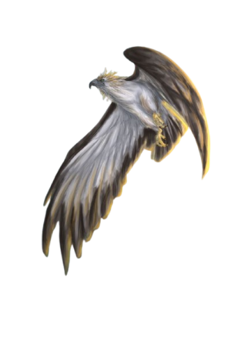
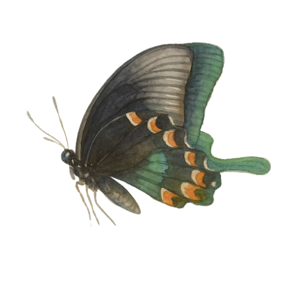
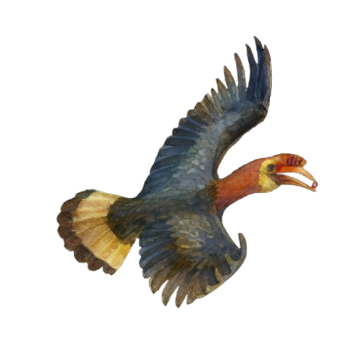

Welcome to Aero - Life in the Sky (SDG 15)
Flying animals—whether birds, bats, or delicate flying insects—bring a sense of wonder and grace to the natural world. With fluttering wings, gliding silhouettes, and dances through open skies, they fill landscapes with motion and music. Birds paint the air with sweeping flights and melodic calls, bats weave silent patterns in the dusk using their secret language of echoes, and insects like butterflies, bees, and dragonflies shimmer like living jewels as they drift from flower to flower. Their ability to take to the air allows them to explore vast distances, find nourishment, escape danger, and help life flourish wherever they go. Each flying creature lives its own unique story. Some build intricate nests nestled high in branches, others cling to cave ceilings or tuck themselves safely beneath petals and leaves. Many embark on incredible migrations, crossing oceans and continents guided only by instinct and starlight. Their lives are deeply intertwined with the rhythm of nature—pollinating blossoms, balancing ecosystems, and helping forests, fields, and gardens thrive. Yet despite their beauty and importance, flying animals face growing challenges. Forests shrink, skies grow brighter with artificial light, and pesticides poison the very flowers that once sustained them. Climate change shifts the seasons they rely on, and human structures—tall buildings, power lines, wind turbines—stand as obstacles in their once-open paths. Pollution, habitat loss, and careless human activity threaten their delicate existence, dimming the skies that were once filled with wings. Still, their resilience endures. Their presence reminds us of the fragile beauty of the world and the responsibility we share in protecting it. By caring for the air, land, and flowers they depend on, we also safeguard the poetry of the skies—ensuring that future generations will continue to marvel at the flutter of wings overhead.
The Philippine Eagle

The Philippine Eagle is also known as the Monkey-eating Eagle, and is the national bird of the Philippines and one of the most powerful and majestic birds in the world. This eagle symbolizes strength, freedom, and the rich natural heritage of the country. Sadly, it is also one of the rarest and most endangered eagles, facing numerous threats from habitat loss and human activities.
The lifestyle of the Philippine Eagle is both fascinating and unique. These birds are known to be solitary and territorial, often living alone or in pairs in the dense mountain forests. They are monogamous, meaning they mate for life, and a pair usually raises only one chick every two years. Their nests are built high on tall trees, safe from most dangers. Because of their slow reproduction rate, it takes many years for their population to recover, especially when forests are destroyed.
The diet of the Philippine Eagle mainly consists of animals found in its forest habitat. While it was once believed that they fed only on monkeys—hence the name “Monkey-eating Eagle”—their diet actually includes a variety of prey such as flying lemurs, civet cats, snakes, and large birds. Using their sharp talons and strong beak, they can capture and kill prey with great skill and speed. Their excellent eyesight also allows them to spot prey from a great distance.
Being an apex predator, the Philippine Eagle has no natural enemies. However, its greatest threat comes from humans. Deforestation, illegal logging, and hunting have caused a rapid decline in their population. Many eagles lose their homes when trees are cut down, and some are even captured or shot. These human activities have made the Philippine Eagle critically endangered.
One of the most unique traits of the Philippine Eagle is its impressive size and appearance. It is one of the largest eagles in the world, with a wingspan that can reach up to seven feet. Its shaggy crest of brown feathers gives it a distinctive and regal look. The eagle is also known for its intelligence and loyalty, as it stays with one partner for life and both parents take part in caring for their young.
The Philippine Eagle can be found only in a few islands of the Philippines, mainly in Luzon, Leyte, Samar, and Mindanao. The largest population can be found in the forests of Mindanao, where conservation centers such as the Philippine Eagle Center in Davao City work to protect and breed these rare birds. These centers play a vital role in keeping the species alive and raising awareness about its importance.
In conclusion, the Philippine Eagle is not just a bird—it is a symbol of the country’s pride, beauty, and natural wealth. Protecting this magnificent creature means protecting the forests and wildlife that make the Philippines unique. Every effort to save the Philippine Eagle is also an effort to preserve the environment for future generations.
The Luzon Peacock Swallowtail

Known as one of the most stunning and rare butterflies found in the Philippines. It is recognized for its vibrant, iridescent colors and distinctive peacock-like patterns on its wings. This butterfly is endemic to Luzon, meaning it is found nowhere else in the world. As one of the country’s most beautiful and endangered species, it represents the delicate balance of the Philippine ecosystem and the importance of conservation.
The lifestyle of the Luzon Peacock Swallowtail is typical of tropical butterflies, but it has adapted to the cool, forested mountains of Luzon. It thrives in high-elevation areas, usually around 1,000 to 2,000 meters above sea level. The butterfly spends most of its life in forested regions where it can easily find food and shelter. It is an active flier during the daytime, gracefully moving from flower to flower to feed and find mates. The species undergoes complete metamorphosis — from egg, to caterpillar (larva), to pupa (chrysalis), and finally to the adult butterfly stage.
In terms of diet, adult Luzon Peacock Swallowtails primarily feed on the nectar of flowering plants. Their long, coiled proboscis allows them to sip nectar deep within blossoms. As caterpillars, they feed on the leaves of host plants, particularly those belonging to the citrus family (Rutaceae). This diet provides the necessary nutrients for the larvae to grow and eventually form chrysalises. The availability of these host plants is crucial for the survival of the species, as the caterpillars are highly dependent on them for food.
When it comes to predators and prey, the Luzon Peacock Swallowtail, like most butterflies, occupies a vulnerable position in the food chain. Birds, spiders, and lizards often prey on both its larval and adult stages. However, the butterfly’s striking coloration serves as a defense mechanism — the bright patterns may startle predators or mimic the appearance of toxic species, warning potential threats to stay away. The butterfly itself is not a predator but plays an essential ecological role as a pollinator, helping flowering plants reproduce.
One of the unique traits of the Luzon Peacock Swallowtail is its dazzling, metallic-blue and green coloration, which gives it a shimmering, peacock-like appearance. The males are especially vibrant, with longer tails on their hindwings that resemble peacock feathers. This remarkable beauty makes it one of the most sought-after butterflies by collectors, contributing to its endangered status. Another distinctive feature is its restricted habitat preference — it can only survive in the cool, mountainous rainforests of Luzon, which makes it highly sensitive to environmental changes such as deforestation and climate change.
Within the Philippines, the Luzon Peacock Swallowtail can be found primarily in the mountainous regions of northern Luzon, especially around Mount Pulag, Mount Santo Tomas, and the Cordillera mountain range. These areas provide the cool temperatures, dense vegetation, and abundant flowering plants that the species needs to thrive. However, habitat loss and illegal collection have greatly reduced their population, leading to their classification as a protected species under Philippine law and their inclusion in the CITES Appendix I, which bans international trade of the species.
conclusion, the Luzon Peacock Swallowtail is not only a symbol of the Philippines’ rich biodiversity but also a reminder of the fragile state of many endemic species. Its lifestyle, diet, and unique adaptations showcase the beauty and complexity of nature, while its endangered status highlights the urgent need for conservation efforts. Protecting the forests of Luzon ensures that this magnificent butterfly continues to grace the Philippine skies for generations to come.
The Rufous Hornbill

Locally known as the “Kalaw,” is one of the most striking and iconic birds of the Philippines. It is often found in the dense rainforests of Luzon, Samar, and Mindanao, where it thrives in tall trees and undisturbed forest areas. This bird is sometimes called the “forest clock” because of its loud, echoing calls that can be heard across long distances. The Rufous Hornbill is not only a beautiful species but also an important part of the Philippine ecosystem.
The lifestyle of the Rufous Hornbill is mostly arboreal, meaning it spends most of its life in the trees. It prefers staying in the forest canopy, where it builds its nest and searches for food. These hornbills are monogamous, forming strong pairs that last for life. During the breeding season, the female stays inside a hollow tree, sealing herself with mud and food remains, leaving only a narrow opening through which the male passes food. This behavior protects the eggs and chicks from predators, showing how caring and cooperative these birds are in raising their young.
When it comes to diet, the Rufous Hornbill is an omnivore. It primarily feeds on a variety of fruits, such as figs and berries, but it also eats insects, small reptiles, and sometimes small mammals. This mixed diet helps maintain a balanced role in the food web. By consuming fruits, it also spreads seeds throughout the forest, aiding in plant reproduction and forest regeneration.
Although the Rufous Hornbill is large and strong, it still faces threats from predators and humans. Natural predators include large snakes and raptors that may attack eggs or chicks. However, the biggest danger comes from human activities like deforestation, hunting, and habitat loss. The destruction of forest areas for agriculture and logging has reduced their natural homes, putting their population at risk.
One of the unique traits of the Rufous Hornbill is its bright red or orange casque on top of its large curved beak. This casque amplifies its calls and plays a role in attracting mates. Another remarkable feature is its social and protective nesting behavior, which is rare among birds. These characteristics make the Rufous Hornbill not only fascinating to study but also a symbol of Philippine wildlife.
The Rufous Hornbill contributes greatly to the ecosystem as a seed disperser. After eating fruits, it spreads the seeds across wide areas, helping new trees grow. This process supports forest health, provides shelter for other animals, and maintains ecological balance. Without birds like the Rufous Hornbill, forest regeneration would slow down, and biodiversity could decline.
In conclusion, the Rufous Hornbill is a truly magnificent bird that plays an essential role in the forests of the Philippines. Its lifestyle, diet, and unique traits all show how well-adapted it is to its environment. However, its decreasing population reminds us of the importance of protecting nature. By conserving the Rufous Hornbill and its habitat, we also protect the forests that sustain life for countless other species including humans.